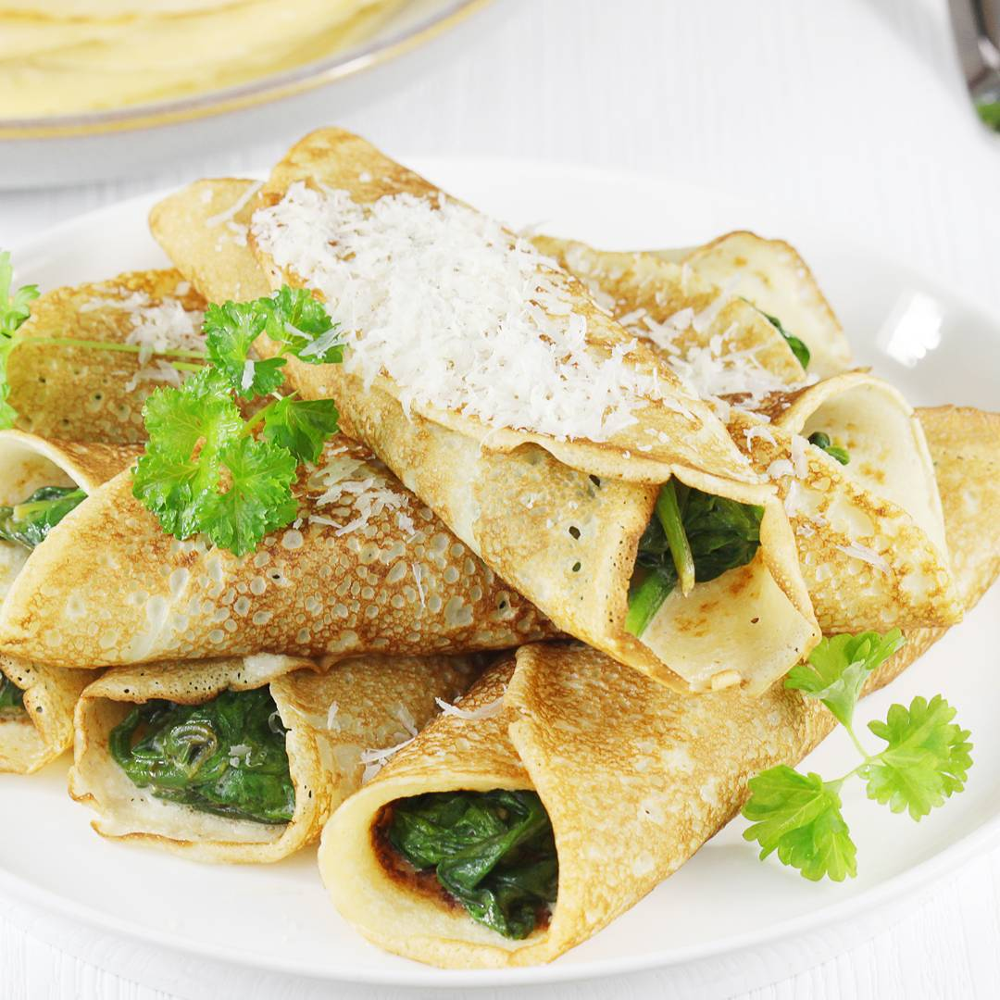

NALEŚNIKI ZE SZPINAKIEM
Pyszne i bardzo proste do zrobienia naleśniki ze szpinakiem to super pomysł na śniadanie lub na obiad. Sprawdzony przepis na ciasto naleśnikowe i najlepszy, uniwersalny farsz ze szpinaku z czosnkiem i masłem!
- świetne naleśniki na każdy posiłek
- proste, pyszne i szybkie do zrobienia
- uniwersalny farsz szpianakowy
Czas przygotowania: 30 minut
Czas smażenia: 30 minut
Ilość porcji: 12 małych naleśników
SKŁADNIKI:
Na ciasto na naleśniki:
- około 3/4 szklanki mąki - 130 g
- 2 małe jajka
- pół szklanki mleka
- pół szklanki wody
- 2 łyżki masła klarowanego
- szczypta soli
Na farsz ze szpinaku:
- 500 g świeżego szpinaku baby
- 2 łyżki masła klarowanego
- 3 łyżki śmietanki kremówki 30 %
- 4 ząbki czosnku
- 3 łyżki soku z cytryny
- przyprawy: łyżeczka cukru, płaska łyżeczka soli, pół łyżeczki pieprzu

PRZYGOTOWANIE:
- Wszystkie składniki (z wyjątkiem masła) na ciasto naleśnikowe umieść w misce.
- Miksuj ciasto przez kilka minut na gładką masę, by pozbyć się ewentualnych grudek. Na koniec dodaj też roztopione i przestudzone masło. Ciasto wymieszaj dokładnie.
- Zacznij nagrzewać patelnię. Ja zaplanowałam małe naleśniki, więc użyłam zwykłej patelni o średnicy wewnętrznej 16 cm.
- Zamieszaj ciasto i małą chochlą odmierz porcję na naleśnika. Naleśniki ze szpinakiem mają być odrobinę grubsze.
- Po około 40-50 sekundach przewracaj placek na drugą stronę. Druga strona potrzebuje zazwyczaj o połowę mniej czasu.
- Jeśli naleśnik po zdjęciu na talerz nie będzie elastyczny, to nic się nie martw. :)
- Do naleśników polecam użyć szpinak świeży. Możesz go też porwać na mniejsze kawałki.
- Zagotuj wodę w czajniku i powoli wylewaj ją na szpinak. Zagotuj jeszcze raz wodę w czajniku i ponownie powoli wylewaj ją po całej powierzchni szpinaku.
- Nagrzej średniej wielkości patelnię. Wyłóż dwie łyżki masła klarowanego. Cztery ząbki czosnku obierz, pokrój w plasterki i wyłóż na patelnię. Sam czosnek podsmażaj tylko kilka sekund, by się nie przypalił i nie zrobił się gorzki.
- Na patelnię z czosnkiem wyłóż odciśnięty z nadmiaru wody szpinak.
- Dodaj łyżeczkę cukru, płaską łyżeczkę soli oraz pół łyżeczki pieprzu. Wlej trzy łyżki soku z cytryny. Ponownie zamieszaj szpinak i wlej na koniec 3 łyżki słodkiej śmietanki kremówki 30 %.
- Na środek każdego naleśnika wyłóż porcję farszu szpinakowego.
- Gotowe naleśniki ze szpinakiem możesz przed podaniem podsmażyć lub nawet zapiec w piekarniku.
KOSZTY:
| |
Cena |
| mąka |
2 zł |
| jajka |
5 zł |
| mleko |
2 zł |
| masło |
8 zł |
| szpinak |
5 zł |
| śmietana |
2 zł |
| czosnek |
1 zł |
| przyprawy |
2 zł |
INFORMACJE O ALERGENTACH:
Są to przepyszne naleśniki, ale o alergentach nie mam pojęcia.
Newslatter
Autor strony:
Łukasz Wolecki
Przepis zaczerpnięty ze strony Ania Gotuje :)